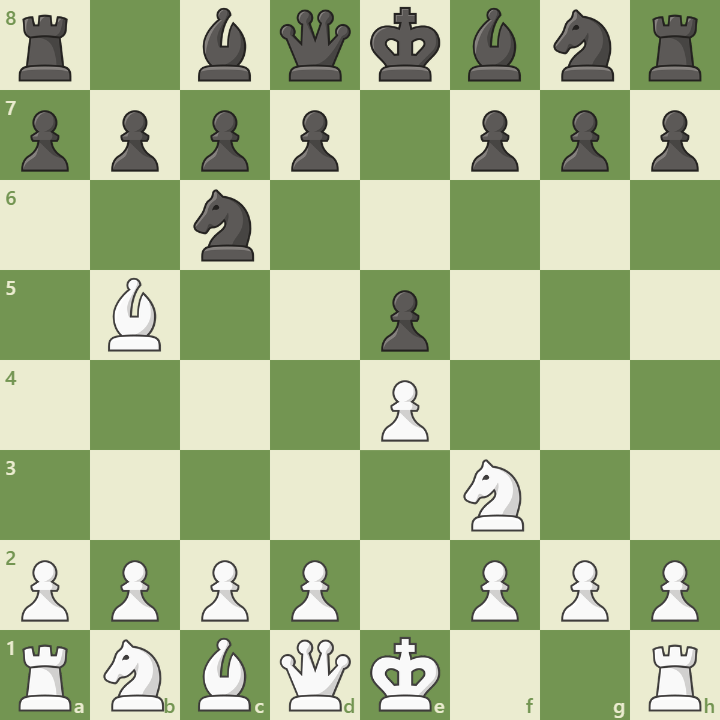

Overview
The Ruy Lopez is one of the most classical and deeply studied openings in chess, beginning with:
1. e4 e5 2. Nf3 Nc6 3. Bb5
White targets the knight on c6 to undermine Black’s control of the center. This opening leads to rich positional battles and has been played by nearly every world champion.
Opening Diagram
This position arises after 1.e4 e5 2.Nf3 Nc6 3.Bb5. White applies pressure to Black’s center and prepares for kingside castling.
Main Variations
- Closed Ruy Lopez: 3...a6 4.Ba4 Nf6 5.O-O Be7 – strategic and slow buildup.
- Open Ruy Lopez: 3...a6 4.Ba4 Nf6 5.O-O Nxe4 – tactical and sharp.
- Berlin Defense: 3...Nf6 – solid and drawish, popular at elite level.
Strategic Themes
- Pressure on e5 and c6
- Long-term maneuvering and pawn breaks
- Safe king placement and flexible plans
- Ideal for intermediate and advanced players